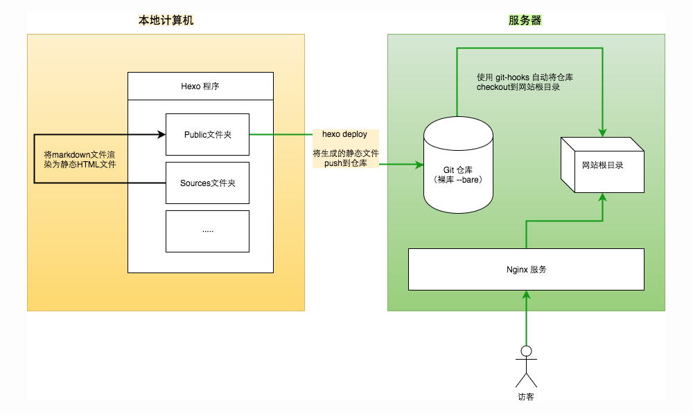
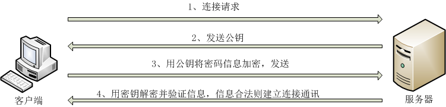

搭建这种网站就是爱折腾,正是这种折腾让我们可以大致了解真正的搭建流程,当然每个人都会有犯错误的时候,这里笔者总结一些曾经遇到的问题,望能给需要的朋友一些帮助。
大致原理图：

客户端(本地)
所需要环境:
- 系统(笔者使用的是windows10)
- nodejs
- hexo
- git (为了同步仓库)
- 可以写markdown的软件 (笔者使用的是sublime3)
- ssh工具 (为了连接到VPS,笔者使用的是Xshell6)
nodejs以及hexo的安装流程部分解析
对于nodejs环境的安装不多解释,详情可以查看官网进一步安装。其中值得一提的是，一定要安装npm
安装了nodejs后，需要查看一下环境中是否安装了npm，可以在命令提示符中输入：
1 | npm -v #查看npm版本 |
安装npm后，可以进而安装hexo，
npm install -g hexo-cli
找到一个合适的工作路径,建立一个网点(本机)
hexo init <folder>cd <folder>npm install
这里需要注意的是，有时候你的安装或者建立网点可能会出错。
如：npm ERR! fetch failed https://registry.npmjs.org/xxx
1 | npm config set registry https://registry.npm.taobao.org |
本章内容侧重问题的解决,有关hexo的写作请移步
服务器(VPS)
所需的环境:
- git
- 系统(笔者使用的是Linux)
- Nginx
- 域名(非必须)
服务器所要作的事情就是布置好git的裸仓,写好脚本(post-receive)让VPS做到布置的自动化
在git(用户目录)目录下初始化一个git的裸库,这里笔者创建一个叫’first’的库
$ git init --bare first.git
进入到里面的hook文件夹
$ cd first.git/hooks
创建并且写入post-receive,请对应好自己的文件夹以及文件的关系
$ vim post-receive
1 |
|
这样,一个hook脚本就算是写好了
ssh免密登录以及hexo的部署(deploy)
免密的作用:
能够配合脚本更加便捷部署,非常有必要设置。
原理：

在VPS中的用户文件夹中建立.ssh文件夹,在这里笔者假设有一个用户叫做git,那么这个文件夹的绝对路径就是
$ /home/git/.ssh
利用一下命令创建本用户的公钥私钥
$ ssh_keygen
在此目录使用以下命令创建authorized_keys文件
$ vim authorized_keys
(或者更直接一点 -> $ cat id_rsa.pub > authorized_keys )
复制公钥_(id_rsa.pub)_的内容到authorized_keys内。
(若不会vim,可以使用WinSCP进入绝对路径来协助复制)
然后利用winscp或者其他形式将私钥(id_rsa)保存到本地(C:\Users\YOURNAME\.ssh)
再使用git bash的指令
$ ssh -v git@xxx.xxx.xxx.xxx
若能直接免密登录则以及成功了
此时,我们还需要hexo直接能部署到VPS,找到你创建的hexo的位置并找到_config.yml,打开
在deploy的位置写上(自己找好文件与文件夹的对应关系)
1 | deploy: |
这时在命令提示符中输入hexo g && hexo d (生成并部署)
应该就能达到生成并且部署的效果
如果提示Deployer not found这种错误,执行以下代码后在部署
npm install hexo-deployer-git –save
如果提示 没有找到库 那么你可能还需要做一步加入git的用户变量设置
1 | git config --global user.name "git" |
想必到这里,大部分问题已经解决
hexo部署路径问题(url)
在hexo文件夹下的_config.xml文件的url和root使用的是绝对路径
(相对vps,而绝对于站点),
如果你发现你所部署的网站与在本地执行hexo s的网站有很大的出入
(例如:CSS不渲染,图片不显示),
那么和有可能就是_config.xml文件中的路径没有设置好
主题中的_config.xml文件也同理
例如：
在 theme/_config.xml中
menu中的home 配置是 /blog/
那么 stylesheets里面的配置就应该是 /blog/css/style.css?v=2018.*.*
全文完
参考文章：
感谢以上文章的作者